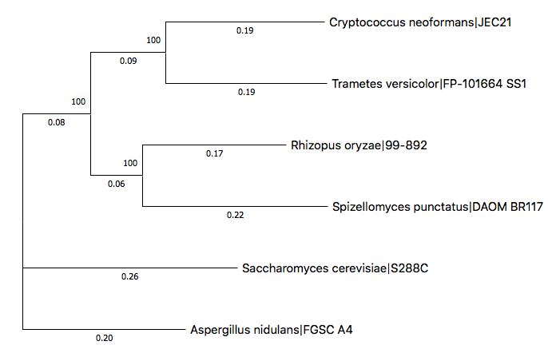
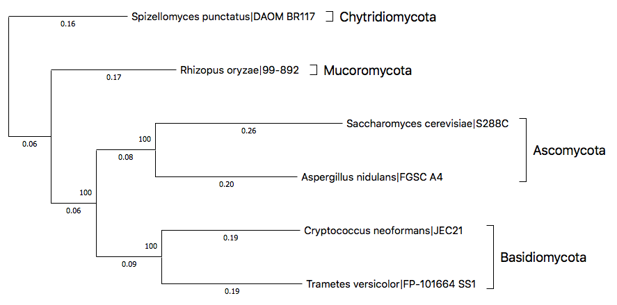

Six representative fungal species and their whole genome assemblies are prepared as a sample dataset.
| Species | Phylum | Accession | Link |
|---|---|---|---|
| Cryptococcus neoformans JEC21 | Basidiomycota | GCA_000091045.1 |
NCBI |
| Saccharomyces cerevisiae S288C | Ascomycota | GCA_000146045.2 |
NCBI |
| Aspergillus nidulans FGSC A4 | Ascomycota | GCA_000149205.2 |
NCBI |
| Spizellomyces punctatus DAOM BR117 | Chytridiomycota | GCA_000182565.2 |
NCBI |
| Trametes versicolor FP-101664 SS1 | Basidiomycota | GCA_000271585.1 |
NCBI |
| Rhizopus oryzae 99-892 | Mucoromycota | GCA_000697725.1 |
NCBI |
After running following command, you will find all the required files from sample/ directory.
$ ufcg download -t sample
The directory contains following components.
By following this guide, you will
Launch profile module in interactive mode by entering following command on your terminal.
$ ufcg profile -u
The program will tell you to enter the input file or directory. We want to use the entire directory as an input, therefore you should enter the path where the genomes are lying.
UFCG |: Enter the file or directory ... (--input) : sample/seq/
Enter the output directory in the same way.
UFCG |: Enter the directory ... (--output) : sample/out/
We want to extract protein markers from the sequences. Type 'PRO' to continue.
UFCG |: Enter the set of genes ... (--set) : PRO
We do not want to maintain temporary files. Type 'n'.
UFCG |: Maintain temporarily created files? (y/n) : n
Now the pipeline will automatically solve dependency and inform you to enter the path of the binaries remaining unsolved.
After then, the program will ask you to decide the number of CPU threads to use. Allocate appropriate amount of threads considering the hardware specification and your affordable time. In here, 10 threads are allocated as an example.
UFCG |: Solving dependencies...
UFCG |: Enter the number ... (--thread, default = 1) : 10
Then the pipeline will ask for the metadata. In this tutorial, we will use the prepared table with complete information.
UFCG |: Provide metadata ... (y/n) : y
UFCG |: Enter the file ... (--metadata) : sample/meta_full.tsv
Finally, after refusing to configurate the advanced options, the pipeline will display the single-line command to run, and ask for your final confirmation. Enter 'y' to launch the pipeline.
UFCG |: Follwing command will be executed : ufcg profile --input sample/seq/ --output sample/out/ --set PRO --thread 10 --metadata sample/meta_full.tsv
UFCG |: Confirm? Enter y (confirm) / n (reset) / x (exit) : y
Tip. If you copy and save the command, you can skip the entire interactive process next time.
By launching the pipeline, the process will begin by reading the input files in and preparing queries to process.
After the preparation finishes, you will see the visualized progress bar such as following.
UFCG |: Reading input data...
UFCG |: Queries prepared. 6 genome sequences identified.
UFCG |: QUERY 1/6 : GCA_000091045.1 (Cryptococcus neoformans)
UFCG |: Extracting protein markers...
UFCG |: PROGRESS : [XXXXXXXXXX...XXX]
Alphabets in the progress bar, which dynamically change during the extraction process, indicate the current status of the genes from the UFCG set as following.
| Pending | Processing | Processed | |||
|---|---|---|---|---|---|
| Sign | Status | Sign | Status | Sign | Status |
| X | Pending | S | Searching | O | Single copy |
| P | Predicting | O | Multiple copy | ||
| V | Validating | X | Not found |
As the extraction finishes, the program will report the result by the count of genes based on their existence, and write the .ucg file on the output folder.
UFCG |: RESULT : [Single: 52 ; Duplicated : 3 ; Missing : 6]
UFCG |: Writing results on : sample/out/GCA_000091045.1.ucg
The pipeline will automatically terminate as it finishes extracting the gene profiles from all six queries. You can check the result files lying in the output directory by entering the following command.
$ ls -1 sample/out
GCA_000091045.1.ucg
GCA_000146045.2.ucg
GCA_000149205.2.ucg
GCA_000182565.2.ucg
GCA_000271585.1.ucg
GCA_000697725.1.ucg
If you have followed the guide through here, you have successfully extracted the core gene profiles from the genome assemblies. You are now ready to proceed.
By following this guide, you will
Launch the module by entering the directory with profiles as an input, labeling them with unique IDs. Since we do not want to perform precise phylogeny here, we will use FastTree.
$ ufcg tree -i sample/out/ -l uid -o sample/tree/ -n tutorial -t 10 -p fasttree
The pipeline will automatically detect .ucg files from sample/out/ directory, perform multiple alignment on each core gene, and reconstruct the phylogenetic tree along with the single gene trees on sample/tree/tutorial/ directory.
Run following command to check the contents of the result directory.
$ ls -1 sample/tree/tutorial/
align
aligned_concatenated.fasta
concatenated.nwk
concatenated_gsi_50.nwk
misc
tree
tutorial.log
tutorial.trm
Reconstructed phylogenetic tree is written in concatenated.nwk. Printing the Newick tree in a plain text will display its content such as following (unique ID number may differ).
$ cat sample/tree/tutorial/concatenated.nwk
((8255661378167235541:0.339741572,8500290590050038758:0.372848133)
1.000:0.166894959,(653512030666424077:0.477038224,8527107384299568166:0.366508240)
1.000:0.164010396,(4422721812785568721:0.391354384,7201562467530039230:0.367452677)1.000:0.096539693);
Oops! Since we labelled the leaves with their unique IDs, this tree does not inform us the actual taxonomic relationship in a glance. We have to replace their label with proper metadata to solve this problem.
Launch prune module with following command, indicating it to replace the labels of UFCG tree with taxon names and strain names.
$ ufcg prune -i sample/tree/tutorial/tutorial.trm -g UFCG -l taxon,strain
This process will create the replaced UFCG tree as replaced.UFCG.nwk in current directory. Move it to our tutorial directory and check its content.
$ mv replaced.UFCG.nwk sample/tree/tutorial/replaced.nwk
$ cat sample/tree/tutorial/replaced.nwk
((Cryptococcus_neoformans|JEC21:0.339741572,Trametes_versicolor|FP-101664_SS1:0.372848133)
1.000:0.166894959,(Saccharomyces_cerevisiae|S288C:0.477038224,Aspergillus_nidulans|FGSC_A4:0.366508240)
1.000:0.164010396,(Spizellomyces_punctatus|DAOM_BR117:0.391354384,Rhizopus_oryzae|99-892:0.367452677)
1.000:0.096539693);
If you have followed the guide through here, you have successfully reconstructed the phylogenetic tree with core genes labelled with proper taxonomic information. You are now ready to proceed.
MEGA, provided by MEGA software, is used as a visualization toolkit in this tutorial. Use this external link to download the software.
Launch the MEGA application and load up the replaced tree with Analysis - User Tree - Display Newick Trees menu. The tree will be visualized such as following image.
By rearranging the subtrees and labeling them with phyla, the tree can be modified like following.
Considering Spizellomyces punctatus as a root, you can easily see that the classification of remaining species are intact, corresponding to the known phylogenetic relationship of fungal phyla.
This is the end of the tutorial. You are now ready to reconstruct the phylogenetic relationship with your own fungal genome assemblies. Feel free to email us if you have any additional questions to ask, want some technical difficulties to be solved, or wish to give us some kind suggestions for improvement.